Honest
Creativitat i tecnologia
per al tercer sector.
A Honest creiem que la creativitat i la tecnologia són un motor per a la transformació social.
Som un estudi creatiu sense ànim de lucre de Palma. Ajudem entitats del tercer sector a desenvolupar projectes on la creativitat i la tecnologia es posen al servei de les persones. Moltes associacions, fundacions i cooperatives fan una feina d’alt impacte social, cultural o ambiental, però el seu relat no sempre arriba amb la força que mereix. Nosaltres hi posem el que sovint queda per al final: el disseny, la comunicació i les eines digitals.
Què feim
Desenvolupem projectes
amb les entitats.
No donam serveis: col·laboram. Treballem amb associacions, fundacions i cooperatives
per ordenar, estructurar i amplificar el seu relat.
Creativitat
L’art i la creativitat com a motor de transformació social. Cobrim la bretxa entre el sector creatiu i el tercer sector.
- Relat, marca i identitat
- Campanyes socials i publicitat
- Disseny gràfic, editorial i multimèdia
- Projectes d’art i cultura
Tecnologia
La tecnologia al servei de les persones i de les entitats. Implementació de la intel·ligència artificial al tercer sector.
- Intel·ligència artificial
- Webs i eines digitals
- Formació i apoderament digital
- Desenvolupament de programari a mida
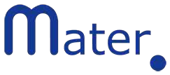
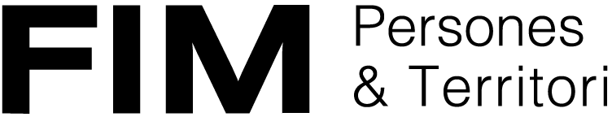
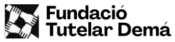
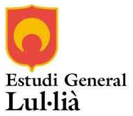
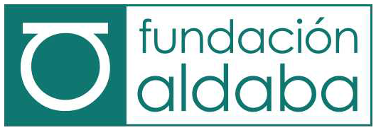
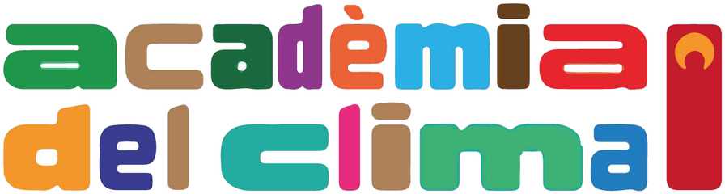
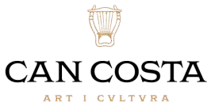
- Fundación Nadine
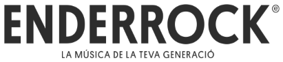
- Ajuntament de Campos
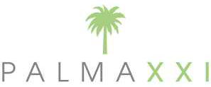
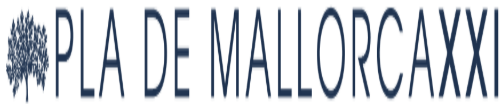
- Cooperativa NOMA
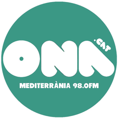
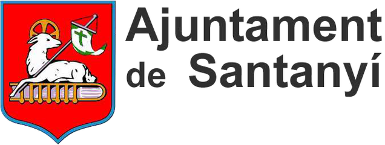
- Ajuntament de Marratxí
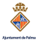
- Associació Memòria de Mallorca
- Àgora Portals
Estudi creatiu sense ànim de lucre
Qui ajuda els qui ajuden?
Unim la indústria creativa i tecnològica amb el tercer sector. Posem el disseny, el desenvolupament tecnològic i la intel·ligència artificial al servei de les entitats que transformen el seu entorn, perquè la seva feina i el seu impacte tinguin el suport que mereixen.
Fer de la creativitat i la tecnologia el motor de la transformació social, i donar a cada causa un relat a l’altura del seu impacte.
No volem ser els més grans, sinó fer les coses ben fetes: impulsar projectes innovadors que transformin el seu entorn.
Honestedat i integritat, abans que res. Només et proposarem allò que de veritat necessites, parlem clar i som transparents en cada pas.
Tanquem la bretxa entre el sector creatiu i tecnològic i el tercer sector, perquè el talent i les eines arribin també a qui treballa pel bé comú.
El sector que més fa per la societat és el que menys recursos pot dedicar a la creativitat i la tecnologia.
Associacions, fundacions i cooperatives sostenen una feina imprescindible, però rarament disposen del pressupost per accedir a sectors altament especialitzats com el disseny, la comunicació o el desenvolupament tecnològic.
Tenen projectes d’altíssim impacte, però una mancança estructural en com els comuniquen i en les eines amb què treballen: els recursos sempre van al que sembla més urgent, i la creativitat i la tecnologia queden per al final.
Per això a Honest desenvolupem metodologies, eines i iniciatives que porten aquest coneixement especialitzat a les entitats, per potenciar el seu impacte i la seva feina.
Posem justament allò que no sempre es poden permetre: del relat a la plataforma digital. I posem la intel·ligència artificial al seu servei perquè les entitats automatitzin el que és tediós i facin més amb menys.
L’equip
Persones que
sumen.
Un equip petit de socis i una xarxa de col·laboradors que aporten mirades diferents: social, tecnològica, creativa i científica.
Socis
Treballadora social
Aporta el coneixement estructural del tercer sector: entén els ritmes, les necessitats i les realitats de les entitats amb què treballem.
Desenvolupament i tecnologia
Informàtic. Construeix l’estructura digital i tecnològica de cada projecte: webs, eines i plataformes que funcionen de veritat.
Direcció creativa i estratègica
Disseny, creativitat, màrqueting i comunicació. Tradueix les causes en un llenguatge visual i estratègic que mou les persones.
Col·laboradors externs
Audiovisual i vídeo
Dona forma audiovisual als projectes: rodatge, edició i peces de vídeo que expliquen amb imatges la feina de les entitats.
Científica · Doctora en física
Aporta rigor científic i mirada analítica: ajuda a traduir dades i coneixement complex en projectes clars i ben fonamentats.
Educador social i fotògraf
Uneix la fotografia i l’educació social per acostar la creació a les persones, a través de tallers i projectes comunitaris.
Creativitat i tecnologia
Desenvolupem projectes amb les entitats.
No donam serveis: col·laboram. Treballem amb associacions, fundacions i cooperatives
per ordenar, estructurar i amplificar el seu relat.
Creativitat
L’art i la creativitat com a motor de transformació social. Cobrim la bretxa entre el sector creatiu i el tercer sector.
- Relat, marca i identitatAcompanyem entitats a ordenar el seu relat i donar-li forma: marca, identitat, to i missatge.
- Campanyes socials i publicitatCampanyes de sensibilització, de carrer i publicitat, com Balcons per Palestina.
- Disseny gràfic, editorial i multimèdiaGràfica, revistes, memòries i peces audiovisuals, com el redisseny de la revista L’Estel.
- Projectes d’art i culturaFestivals, instal·lacions, residències artístiques i espais de creació.
Tecnologia
La tecnologia al servei de les persones i de les entitats. Implementació de la intel·ligència artificial al tercer sector.
- Intel·ligència artificialDesenvolupem eines d’IA perquè les entitats facin més amb menys, com un assistent per redactar memòries i justificar subvencions.
- Webs i eines digitalsWebs i plataformes accessibles per a associacions, fundacions i cooperatives.
- Formació i apoderament digitalTallers en competències digitals i comunicatives per a entitats, voluntariat i ciutadania.
- Desenvolupament de programari a midaEines i aplicacions fetes a mida per a les necessitats de cada entitat.
Com ho feim
La cooperació és la nostra
manera de fer.
No treballem per a les entitats, treballem amb elles. Creiem en les sinergies: quan el coneixement del tercer sector i el de la indústria creativa i tecnològica es troben, l’impacte es multiplica. Per això construïm relacions de cooperació estables, on cada part aporta el que sap fer millor.
Aliances estables amb cooperatives i entitats que van més enllà del marc administratiu i esdevenen processos reals de cooperació.
Desenvolupem plegats projectes socials, culturals i digitals: de la idea a la posada en marxa.
Tallers, taller ocupacional i voluntariat: creativitat i acció comunitària amb les persones al centre.
Projectes concrets amb un objectiu clar: una web, una identitat, una campanya o una eina digital, fets a mida per a cada entitat.
Amb qui treballam
Una xarxa que creix
projecte a projecte.
El 2025 hem desenvolupat 15 projectes i hem formalitzat 3 convenis de col·laboració amb cooperatives i entitats. Hem treballat amb fundacions, associacions, ajuntaments, mitjans de comunicació i festivals, ampliant l’abast territorial i sectorial de l’associació.
Entitats amb les quals hem cooperat
- Fundación Nadine
- Ajuntament de Campos
- Cooperativa NOMA
- Ajuntament de Marratxí
- Associació Memòria de Mallorca
- Àgora Portals
Portfolio de projectes
Idees que mouen la societat.
Eines d’IA, webs i plataformes, identitats, campanyes, editorial i art: projectes on la creativitat
i la tecnologia es posen al servei de la societat.
Website · Redisseny
Fundació Tutelar Demà
Nova web accessible per a la fundació, fruit d’un conveni: de la web de 2004 a una web clara i actual.
Campanya
Balcons per Palestina
Cinc tallers per teixir banderes de Palestina i omplir els balcons: activació social i comunitària amb Balcons per la Pau.
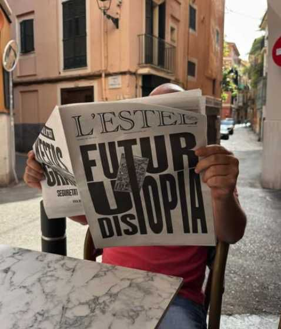
Redisseny editorial
Revista L’Estel
Redisseny d’una revista amb 40 anys d’història: noves retícules, línia editorial i set números d’acompanyament.
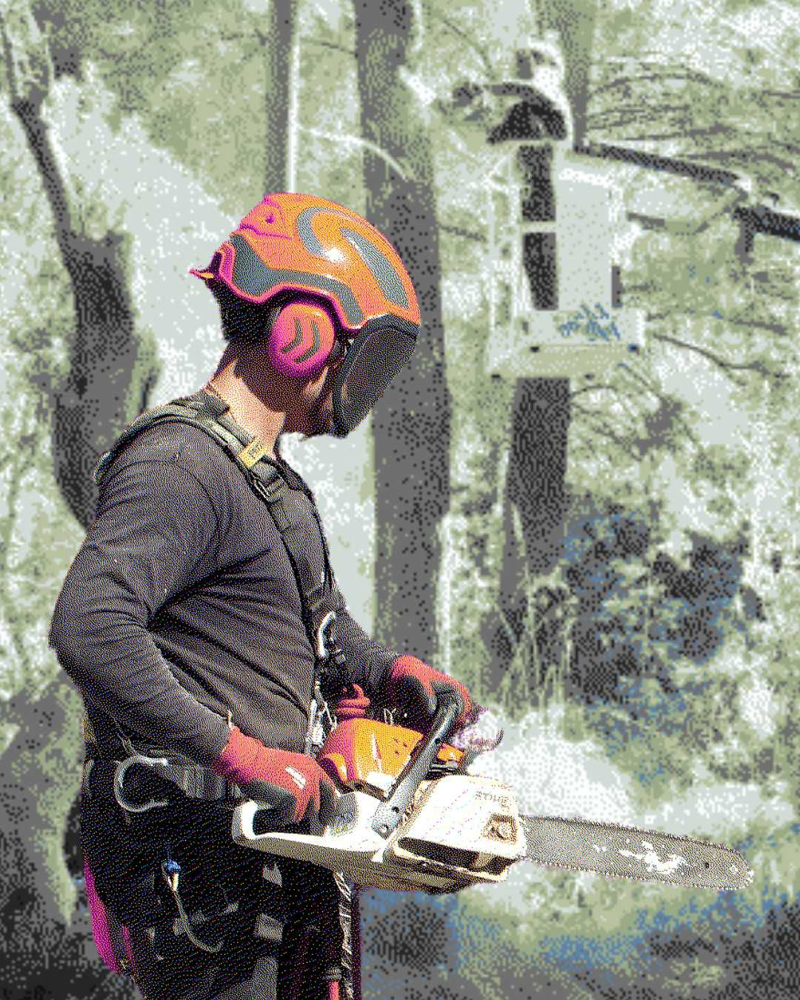
Web & comunicació
Regenera Deià
Suport en comunicació, web i xarxes socials per a un projecte de regeneració comunitària a Deià.
Web · Conveni
Fundació Iniciatives del Mediterrani
Nou branding, logotip i una web moderna que connecta amb els públics joves de la fundació.
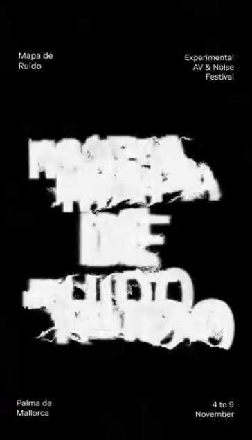
Comunicació · Festival
Mapa de Ruido · Comunicació i tecnologia
Direcció associada, comunicació, xarxes i organització de càpsules del festival d’art sonor.
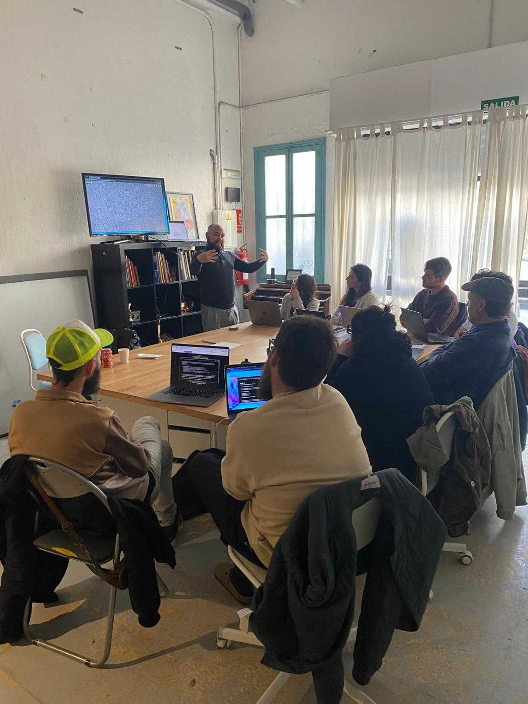
Tecnologia · Taller
Taller de live coding i mapping
Aprendre a fer art amb codi de programació: live coding i mapping dins el festival Mapa de Ruido.
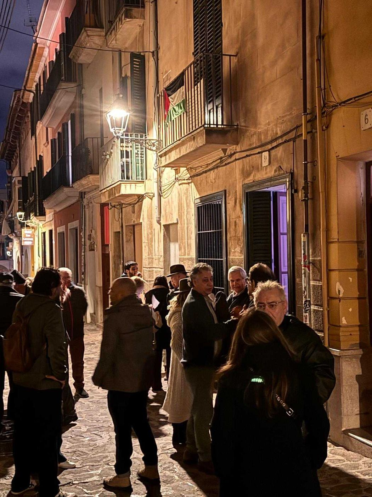
Espai
CUBE · Art contemporani
Galeria efímera al centre de Palma: un cub blanc amb exposicions sobre el turisme de masses.
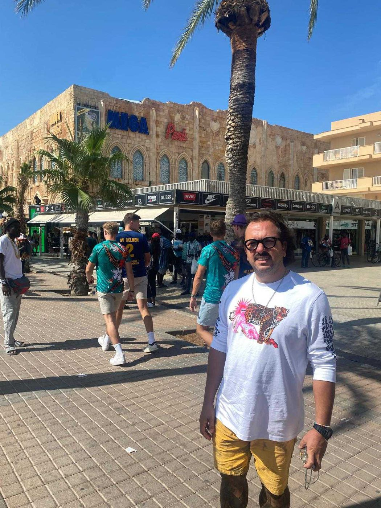
Residències
Saufausreden
Residències a la Platja de Palma: artistes de tot el món transformen el paisatge i dialoguen amb el turisme de masses.
Instal·lació
Nit de l’Art · Santanyí
Projeccions amb IA i reconeixement facial: art d’interacció a l’espai públic de Santanyí.
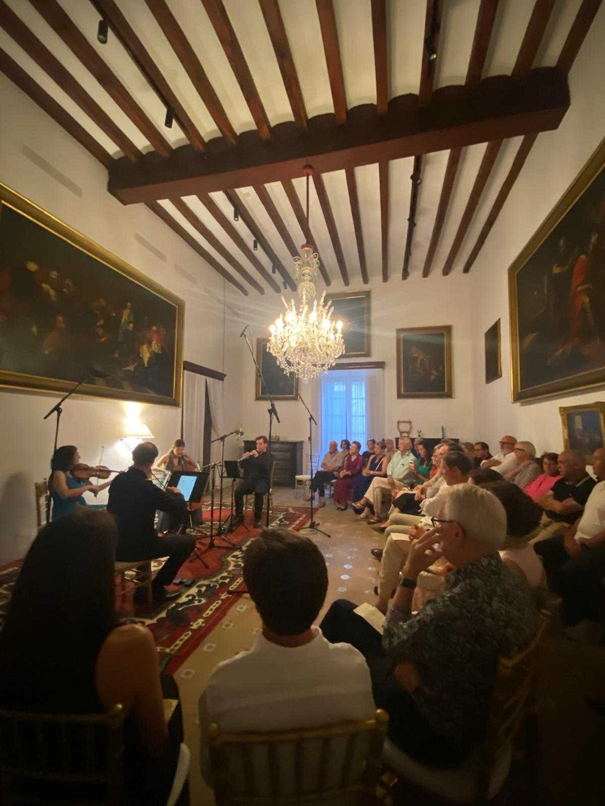
Web · Festival
Can Costa
Nova direcció de marca i creativa del centre cultural de la casa natal de Miquel Costa i Llobera.
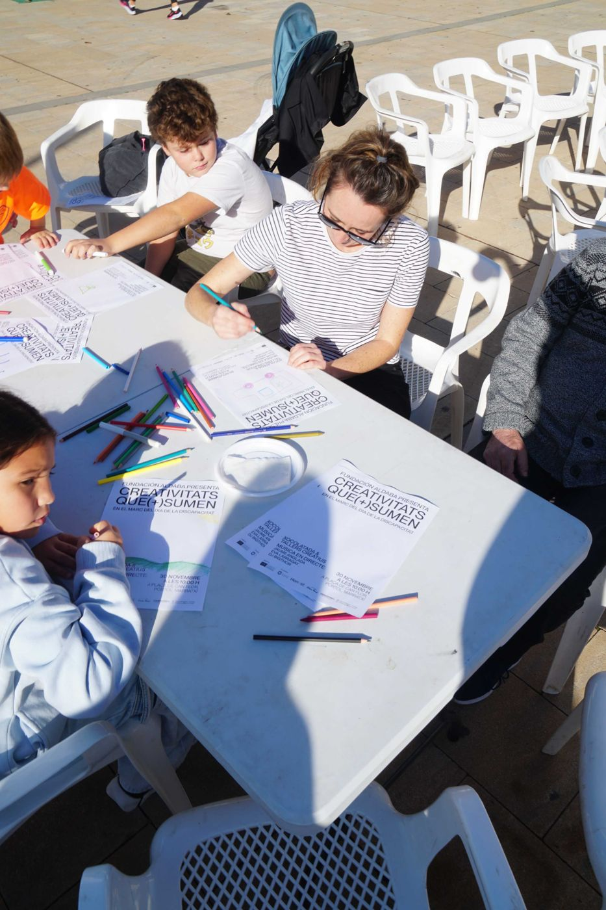
Campanya · Fundación Aldaba
Creativitats que (+) sumen
Jornada amb la Fundación Aldaba per apoderar persones en exclusió social a través de l’art.
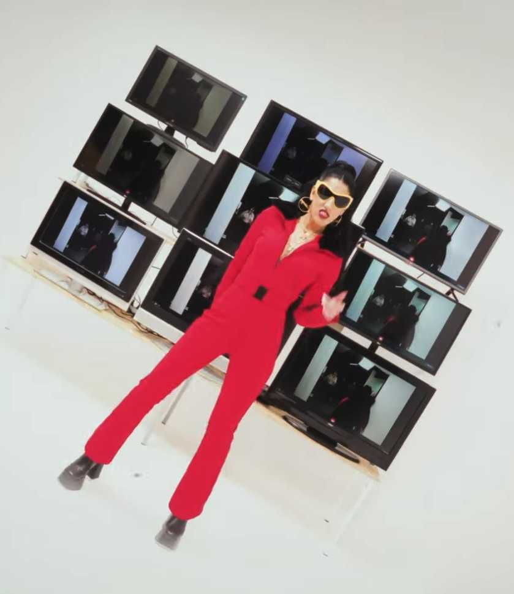
Videoclip
Videoclip Aina Losange
Escenografia del videoclip d’Aina Losange amb una de les nostres obres d’art.
Recerca · Dades
Data to Design
Dades climàtiques convertides en gràfics vectorials: un disseny que canvia amb el temps meteorològic.
Col·laboració · Clima
Acadèmia del Clima
Conveni amb l’Acadèmia del Clima: cartells de tot l’any, consultoria de sistemes i web.
Premi · Ceràmica
Premi Benet Ams de Ceràmica
Premi de ceràmica per una instal·lació amb ceràmiques interactives, IA i robòtica.
Espai · Estudi
Corall 12
Estudi creatiu amb tallers de pintura, fusteria i ceràmica, residències i cowork a la Platja de Palma.
Website
Pàgina web Mater Ariany
Web accessible de l’hotel de Mater a Ariany, pensada per a persones amb discapacitat.
Website
Pàgina web Possessió Muntanya
Web d’una explotació agrícola que reactiva la possessió a través de l’oli.
Packaging · Conveni
Packaging Cooperativa NOMA
Packaging de la línia de cosmètica de cànem d’una cooperativa que reactiva l’agricultura balear.
Disseny gràfic · Premsa
dBalears · Dijous Bo
Direcció d’art i editorial d’un diari imprès de més de 20.000 exemplars.
Taller · Fotografia
Taller de fotografia Polaroid
Fotografia social amb Polaroid pels carrers de Palma amb Margarito de la Guetto.
Instal·lació · Festival
Instal·lació al Lens Festival
Instal·lació sobre la interacció humà-màquina: la càmera com a mirall, amb IA.
Instal·lació · Art i tecnologia
Hello God · Nit de l’Art de Campos
La tecnologia com a substitució de les necessitats espirituals: una instal·lació vista per més de 10.000 persones.
No hi ha projectes en aquesta categoria.
Projectes · Tecnologia · Website · Redisseny
Fundació Tutelar Demà
Nova web per a la Fundació Tutelar Demà, fruit d’un conveni de col·laboració: una fundació que acompanya persones amb discapacitat intel·lectual i que tenia una web de 2004.
Un conveniEl projecte neix d’un conveni de col·laboració signat entre la fundació i Honest.
De 2004 a avuiLa web anterior era de l’any 2004 i s’havia quedat molt desactualitzada. N’hem fet una de nova, clara i actual, que explica millor la feina de la fundació.
Accessible per a tothomHem treballat amb criteris d’accessibilitat perquè qualsevol persona hi pugui navegar sense barreres.
Què hi vam fer
Conveni · Disseny web · Desenvolupament · Accessibilitat
Projectes · Creativitat · Campanya
Balcons per Palestina
Un projecte d’activació social: grups de persones es reuneixen per teixir banderes de Palestina i omplir els balcons de solidaritat.
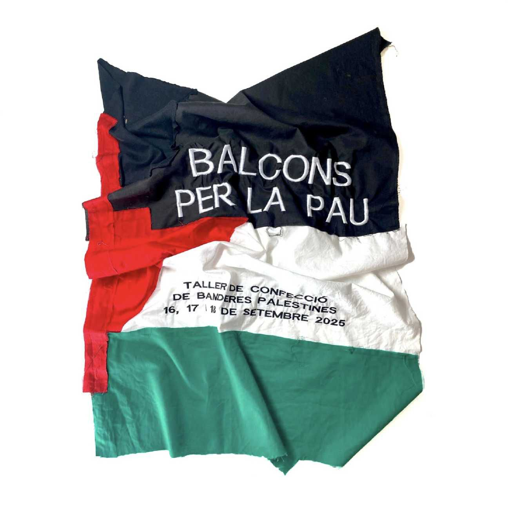
Teixir juntesVam organitzar cinc tallers a Mallorca on grups de dones es trobaven per cosir i teixir banderes de Palestina per penjar als balcons.
Mobilització comunitàriaEl teixir es va convertir en una excusa per trobar-se, conversar i activar el barri. Juntament amb Balcons per la Pau.
L’excedent, solidariLes banderes sobrants es van vendre i el projecte va créixer de manera comunitària.
Què hi vam fer
Activació social · Tallers · Campanya · Comunitat
Projectes · Creativitat · Redisseny editorial
Revista L’Estel
Redisseny de L’Estel, una revista amb 40 anys d’història que s’havia quedat desactualitzada.
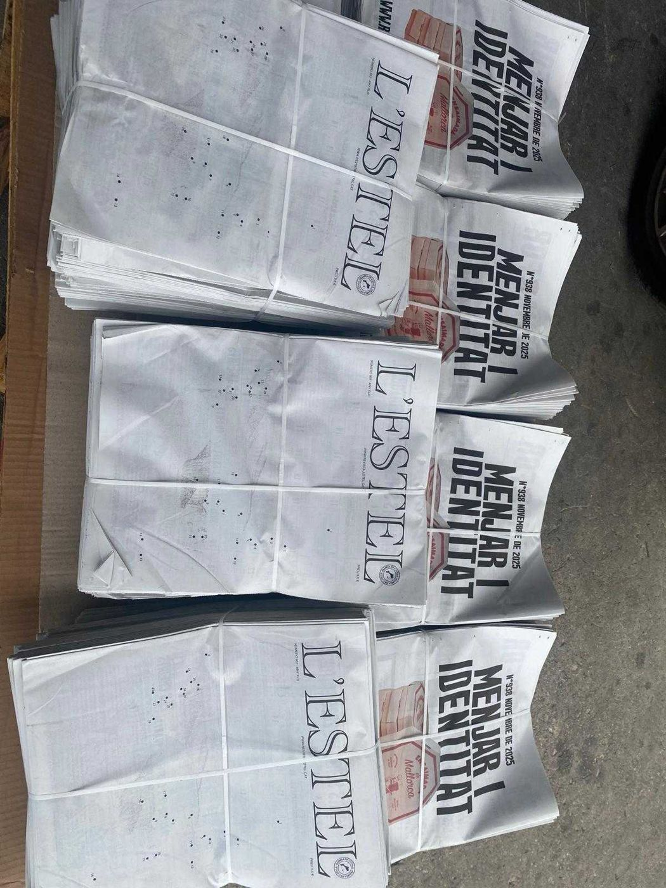
Noves retículesVam dissenyar noves graelles i un redisseny complet de la maquetació per donar-li una lectura més actual.
Set números d’acompanyamentDurant set números vam fer consultoria i acompanyament a l’equip; després ells han continuat amb el sistema que vam construir plegats.
Més que paperVam actualitzar els continguts i la línia editorial, i vam començar a treballar l’Instagram i la web.
Què hi vam fer
Redisseny editorial · Consultoria · Línia editorial · Xarxes
Projectes · Creativitat · Web & comunicació
Regenera Deià
Suport en comunicació, web i xarxes socials a Regenera Deià, un projecte de regeneració comunitària amb conveni de col·laboració.
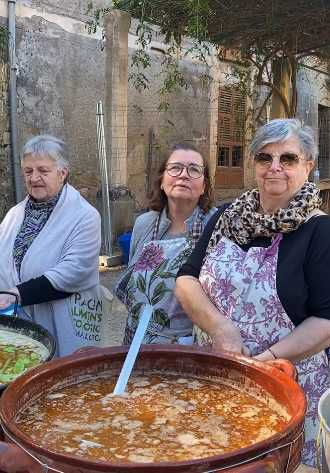
ComunicacióAcompanyam el projecte en la comunicació i en com explica la seva feina.
Web i xarxesHem desenvolupat la web i portam les xarxes socials del projecte.
Què hi vam fer
Conveni · Comunicació · Web · Xarxes socials
Projectes · Tecnologia · Web · Conveni
Fundació Iniciatives del Mediterrani
Nova web i nova imatge per a la Fundació Iniciatives del Mediterrani, amb conveni de col·laboració.
Una imatge novaHem actualitzat tot el branding: logotip i imatge gràfica, que s’havien quedat antics.
Una web modernaUna web de disseny actual que connecta amb els públics més joves i amb el públic objectiu de la fundació.
Què hi vam fer
Conveni · Branding · Logotip · Disseny web
Projectes · Creativitat + Tecnologia · Comunicació · Festival
Mapa de Ruido · Comunicació i tecnologia
Comunicació, xarxes i organització del festival d’art sonor Mapa de Ruido, on participam en la direcció com a part associada.
Direcció del festivalFormam part de la direcció del festival com a entitat associada.
Comunicació i xarxesHem portat la comunicació, el seguiment i les xarxes socials.
Esdeveniments i càpsulesOrganització del festival i de les càpsules, com Alta Intensitat i Síntesi Modular, a l’Espacio Pulpo.
També hi vam fer un tallerDins el festival vam impartir un taller de live coding i mapping. Veure el taller
Què hi vam fer
Direcció · Comunicació · Xarxes · Producció d’esdeveniments
Projectes · Tecnologia · Taller · Mapa de Ruido
Taller de live coding i mapping
Un taller de noves tecnologies perquè la gent aprengués a fer art a través del codi de programació, dins el festival Mapa de Ruido.
Art amb codiEl live coding converteix el codi en un instrument: s’escriu en directe per crear so i imatge.
Mapping i vectorsVam treballar la generació de formes i vectors amb codi i la seva projecció sobre l’espai.
Dins el festivalEl taller formava part de Mapa de Ruido.
Què hi vam fer
Formació · Live coding · Mapping · Codi creatiu
Projectes · Creativitat · Espai
CUBE · Art contemporani
Una galeria efímera al centre de Palma durant el darrer trimestre de 2025, amb exposicions d’artistes al voltant del turisme de masses.
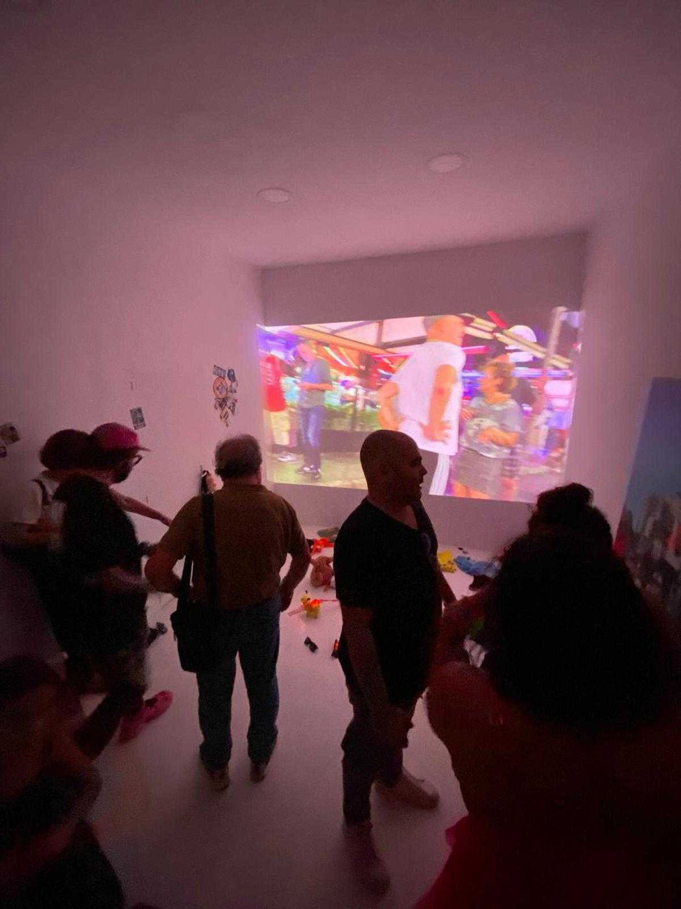
Dels marges al centreCUBE portava al centre de Palma mirades crítiques sobre el turisme de masses.
Un cub blancL’espai era literalment un white cube, el cub blanc típic de les galeries d’art, i a dins s’hi feien intervencions artístiques.
TornaràActualment l’espai és en obres; en un futur el tornarem a obrir.
Què hi vam fer
Galeria · Comissariat · Exposicions · Producció
Projectes · Creativitat · Residències
Saufausreden
Programa de residències artístiques a Corall 12, a la Platja de Palma, que convida artistes de tot el món a dialogar amb el turisme de masses.
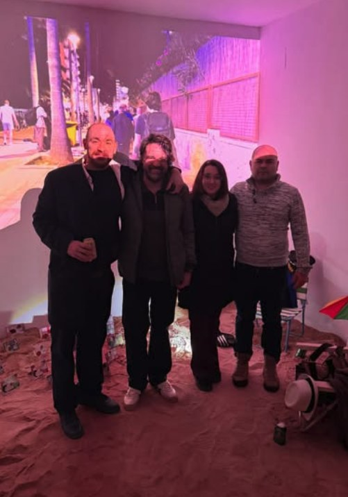
Residències a la Platja de PalmaConvidam artistes de tot el món a viure i treballar a Corall 12, a la zona del Ballermann.
Transitar el paisatgeEls artistes recorren el paisatge de la Platja de Palma, el transformen i dialoguen amb el turisme de masses.
2025Dues edicions: Margarito de la Guetto i Llorenç Garrit.
Què hi vam fer
Residències · Art contemporani · Territori
Projectes · Creativitat · Instal·lació
Nit de l’Art · Santanyí
Instal·lació d’art interactiu per a la Nit de l’Art de Santanyí: projeccions amb intel·ligència artificial i reconeixement facial de la gent que hi passava.
Art d’interaccióMuntam diferents sistemes amb què el públic interactuava i es veia transformat en directe.
Art, tecnologia i nous mitjansUna peça que uneix intel·ligència artificial, visió per computador i espai públic. Per a l’Ajuntament de Santanyí.
Què hi vam fer
Instal·lació · IA · Reconeixement facial · Nous mitjans
Projectes · Tecnologia · Web · Festival
Can Costa
Nova direcció de marca i direcció creativa de Can Costa, el centre cultural de la casa natal de Miquel Costa i Llobera, a Pollença.
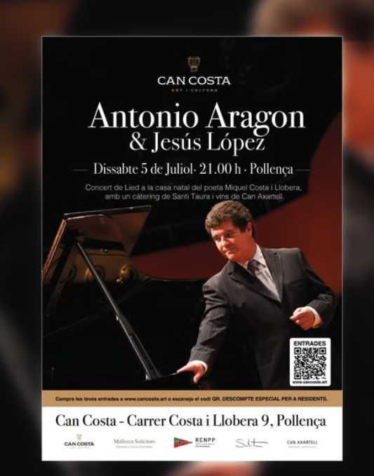
MarcaHem definit la nova direcció de marca del centre cultural.
Direcció creativaPortam la direcció creativa, la web i la comunicació de la seva programació, com el festival de música.
Què hi vam fer
Direcció de marca · Direcció creativa · Web · Comunicació
Projectes · Creativitat · Campanya · Fundación Aldaba
Creativitats que (+) sumen
Una jornada creativa organitzada amb la Fundación Aldaba per apoderar persones en situació d’exclusió social a través de l’art.
Art per apoderarDibuixàvem i cream plegats: l’art com a eina per donar veu i confiança a les persones.
Amb la Fundación AldabaUn esdeveniment coorganitzat amb la fundació, obert i participatiu.
Què hi vam fer
Esdeveniment · Tallers · Art participatiu
Projectes · Creativitat · Videoclip
Videoclip Aina Losange
Col·laboració en l’escenografia del videoclip d’Aina Losange, on apareix una de les nostres obres d’art.
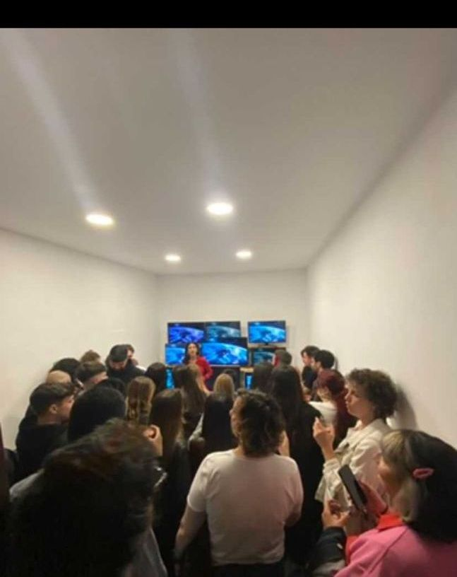
EscenografiaUna obra d’Honest, Hello God, forma part del fons del videoclip i s’integra en la narrativa visual.
PresentacióEl videoclip es va presentar a Honest amb una instal·lació de televisors.
Què hi vam fer
Escenografia · Art · Vídeo
Projectes · Tecnologia · Recerca · Dades
Data to Design
Transformam dades climàtiques en gràfics vectorials per fer disseny en temps real: el disseny canvia quan canvien les dades meteorològiques.
Real time designEls gràfics es generen a partir de dades climàtiques i es transformen contínuament segons el temps que fa.
Aplicat a l’Acadèmia del ClimaS’ha aplicat principalment a la web de l’Acadèmia del Clima i a peces de comunicació sobre temàtiques climàtiques. Veure el projecte
Què hi vam fer
Recerca · Dades · Disseny generatiu · Temps real
Projectes · Tecnologia · Col·laboració · Clima
Acadèmia del Clima
Conveni de col·laboració amb l’Acadèmia del Clima: comunicació gràfica de tot l’any, consultoria de sistemes informàtics i web.
Comunicació gràficaVam dissenyar tots els cartells i la comunicació gràfica de l’any.
Sistemes i webConsultoria de sistemes informàtics i desenvolupament de la web, on apliquem el projecte Data to Design.
Què hi vam fer
Conveni · Comunicació gràfica · Consultoria · Web
Projectes · Creativitat · Premi · Ceràmica
Premi Benet Ams de Ceràmica
Guanyadors del Premi Benet Ams de Ceràmica amb una instal·lació d’art i tecnologia amb ceràmiques interactives.
Ceràmica d’aquí a 30 anysLa instal·lació imaginava com serà el món de la ceràmica d’aquí a trenta anys, barrejat amb intel·ligència artificial i robòtica.
Peces interactivesCeràmiques que responen al públic: un diàleg entre l’ofici més antic i la tecnologia més nova.
Què hi vam fer
Instal·lació · Ceràmica · IA · Robòtica · Premi
Projectes · Creativitat · Espai · Platja de Palma
Corall 12
El nostre estudi creatiu a la Platja de Palma: tallers de pintura, fusteria i ceràmica, residències artístiques i cowork.
TallersUn espai amb taller de pintura, de fusteria i de ceràmica, on es poden desenvolupar les disciplines artístiques.
ResidènciesAquí es fan les residències artístiques, com Saufausreden.
CoworkTambé és un cowork creatiu on es pot venir a treballar.
Què hi vam fer
Estudi · Tallers · Residències · Cowork
Projectes · Tecnologia · Website
Pàgina web Mater Ariany
Web de l’hotel de Mater a Ariany, pensada des de l’accessibilitat.
AccessibilitatVam aplicar principis d’accessibilitat i funcionalitat perquè persones amb discapacitat física, auditiva o visual hi puguin navegar sense problemes.
MantenimentAcompanyament i manteniment anual de la web.
Què hi vam fer
Disseny web · Accessibilitat · Manteniment
Projectes · Tecnologia · Website
Pàgina web Possessió Muntanya
Web de Possessió Muntanya, una explotació agrícola que vol reactivar la possessió a través de la producció d’oli.
Reactivar la terraUna web que explica el projecte de recuperació agrícola de la possessió.
MantenimentAcompanyament i manteniment anual.
Què hi vam fer
Disseny web · Desenvolupament · Manteniment
Projectes · Creativitat · Packaging · Conveni
Packaging Cooperativa NOMA
Tot el packaging de la línia de cosmètica de cànem de la Cooperativa NOMA, un projecte de reactivació de l’agricultura balear.
Cosmètica de cànemVam dissenyar el packaging de tota la línia de productes.
Agricultura balearLa cooperativa impulsa la reactivació agrícola de les Illes, i el projecte neix del conveni de col·laboració amb Honest.
Què hi vam fer
Conveni · Packaging · Disseny gràfic
Projectes · Creativitat · Disseny gràfic · Editorial
dBalears · Dijous Bo
Direcció d’art i editorial de l’edició impresa del diari dBalears per al Dijous Bo, amb més de 20.000 exemplars.
En paperVam dissenyar el diari imprès del qual es van fer més de 20.000 còpies.
Direcció d’artLa direcció d’art i editorial es va portar des d’Honest.
Què hi vam fer
Direcció d’art · Disseny editorial · Premsa
Projectes · Creativitat · Taller · Fotografia
Taller de fotografia Polaroid
Taller de fotografia social amb l’artista Margarito de la Guetto, amb càmeres i carrets Polaroid pels carrers de Palma.
Fotografia socialUn taller per acostar la fotografia social a les persones.
Pel barriDinàmiques amb càmeres i carrets Polaroid pel barri de Pere Garau, a Palma.
Què hi vam fer
Formació · Fotografia · Taller
Projectes · Creativitat · Instal·lació artística
Instal·lació al Lens Festival
Instal·lació per al Lens Festival sobre la interacció entre humans i màquines: com, a través de la càmera, l’ésser humà es veu a si mateix.
Humà i màquinaUna peça que explora la relació entre les persones i la tecnologia a través de la imatge.
Intel·ligència artificialLa instal·lació utilitzava IA per transformar la mirada del públic sobre si mateix.
Què hi vam fer
Instal·lació · IA · Nous mitjans
Projectes · Creativitat + Tecnologia · Instal·lació
Hello God · Nit de l’Art de Campos
Una instal·lació que presenta la tecnologia com a substitució de les necessitats espirituals de l’ésser humà. La van veure més de 10.000 persones.
Una nova feHello God planteja com la tecnologia ocupa el lloc que abans tenia l’espiritualitat, i a quines noves dependències ens porta.
Nit de l’Art de CamposInstal·lació presentada a la Nit de l’Art de Campos, amb més de 10.000 visitants.
Què hi vam fer
Instal·lació · Art i tecnologia · Producció
Honest.Lap · Laboratori d’Art i Pensament
Un laboratori obert on l’art, la tecnologia i el pensament es troben.
Honest també és un espai per experimentar. Acollim residències artístiques, compartim coneixement a través de tallers i formació, i impulsam recerca experimental que uneix la ciència i la tecnologia amb l’art i les humanitats. Un lloc on provar idees noves, fer-se preguntes i obrir camins que després arriben a les entitats i a la societat.
Acollim artistes perquè investiguin i produeixin obra arrelada al territori, en diàleg amb les persones i els espais.
Tallers, cursos i sessions obertes per compartir coneixement: de la creativitat al codi, sempre aprenent fent.
Explorem què passa quan el codi, les dades i les eines digitals es posen al servei de la creació artística.
Projectes de caràcter científic i tècnic que es creuen amb l’art i les humanitats per obrir noves preguntes.
LaboratoriUn espai obert per provar, equivocar-se i tornar-hi. Aquí els processos, les preguntes i els errors importen tant com els resultats.
ArtLa creació com a manera de conèixer el món: residències, instal·lacions, tallers i trobades obertes amb el públic, el barri i el territori.
PensamentRecerca, estètica i mirada crítica. Pensam el que feim, i per què ho feim, per fer-ho millor, amb més rigor i amb molt més sentit.
Convocatòries i reconeixements
Pràctica artística
contemporània.
Participam en residències, premis i convocatòries artístiques. És una manera de posar a prova la nostra feina, créixer amb altres creadors i portar el laboratori més enllà del nostre estudi.
Premi · Ceràmica
Premi Benet Ams de CeràmicaGuanyadors del premi de ceràmica de Marratxí, un reconeixement a la recerca entre material, forma i idea.
Veure el projecteSelecció · Art a l’espai públic
Nit de l’ArtSeleccionats per participar a la Nit de l’Art i a altres esdeveniments artístics amb instal·lacions pensades per al públic.
Veure el projecteResidències · Convocatòries
Residències artístiquesEns presentam a residències i convocatòries per seguir investigant, produint obra i compartint processos amb altres artistes.
Veure el projecteRecerca experimental
Quan les dades
es tornen forma.
Creuam ciència, tecnologia, art i humanitats. Convertim informació complexa en imatges, patrons i experiències que es poden entendre, compartir i fer servir.
Dades · Disseny
Data to DesignLes dades del canvi climàtic representades en patrons gràfics que es poden fer servir per dissenyar: una manera de portar la crisi climàtica als objectes, les superfícies i les imatges del dia a dia.
Veure el projecteClima · Col·laboració
Acadèmia del ClimaCol·laboració per fer més visible i comprensible l’emergència climàtica a través de la creativitat, el disseny i la comunicació.
Veure el projecteCodi · Art sonor
Live coding a Mapa de RuidoTallers de live coding i de codi per a la generació de vectors i gràfics artístics, dins el festival d’art sonor Mapa de Ruido.
Veure el projecteEspais
Llocs per crear
i per mostrar.
El laboratori també és físic: un estudi on es treballa i es fan residències, i una galeria on l’art es troba amb el públic.
Cowork creatiu · Platja de Palma
Corall 12 · Creative Cowork
Estudi creatiu amb tallers de pintura, fusteria i ceràmica, residències i cowork a la Platja de Palma.
Espai d’art experimental · Palma
CUBE · Experimental Art Space
Galeria efímera al centre de Palma: un cub blanc amb exposicions sobre el turisme de masses.
Col·laboram?
Col·laborem.
Honest és una associació: creixem amb les entitats, les persones i els artistes que s’hi sumen.
Transparència
Comptes clars, feina a la vista.
Com a associació sense ànim de lucre, posem a l’abast de tothom els documents que expliquen qui som, com ens organitzem i què hem fet.
Transparència
Convenis de col·laboració.
Aliances estables amb cooperatives i entitats que van més enllà del marc administratiu i esdevenen processos reals de cooperació i desenvolupament compartit.
Si ets una entitat del tercer sector, una cooperativa o una associació i vols que treballem plegats de manera estable, escriu-nos a hola@honest.cat.
Avís legal
Avís legal
Informació legal sobre el titular i l’ús d’aquest lloc web.
En compliment de la Llei 34/2002, de serveis de la societat de la informació i de comerç electrònic (LSSI-CE), s’informa que aquest lloc web és titularitat de:
Associació Honest · CIF G22446975 · Núm. de registre d’associacions 311000012112 · C. Corall 12 A, 07600 Platja de Palma (Illes Balears) · hola@honest.cat
Aquest lloc web té com a finalitat donar a conèixer l’Associació Honest, les seves activitats, projectes i línies de treball, i facilitar el contacte amb entitats i persones interessades.
L’accés al lloc web és gratuït i implica l’acceptació d’aquestes condicions. La persona usuària es compromet a fer-ne un ús adequat i lícit, i a no utilitzar-ne els continguts amb finalitats contràries a la llei o que puguin perjudicar drets de tercers.
Els textos, dissenys, imatges, logotips i altres continguts d’aquest lloc web són propietat de l’Associació Honest o de tercers que n’han autoritzat l’ús. Els logotips de les entitats col·laboradores pertanyen als seus respectius titulars i s’hi mostren únicament per identificar la col·laboració. No se’n permet la reproducció, distribució o transformació sense autorització expressa.
L’Associació Honest treballa perquè la informació sigui correcta i actualitzada, però no pot garantir l’absència d’errors ni es fa responsable de l’ús que se’n faci. Els enllaços a llocs web de tercers s’ofereixen a títol informatiu i Honest no es responsabilitza dels seus continguts.
Aquest avís legal es regeix per la legislació espanyola. Per a qualsevol controvèrsia, les parts se sotmeten als jutjats i tribunals de Palma, llevat que la normativa aplicable disposi una altra cosa.
Darrera actualització: setembre de 2026.
Política de privacitat
Privacitat
Com tractem les dades personals de les persones que es posen en contacte amb nosaltres.
Associació Honest · CIF G22446975 · Núm. de registre d’associacions 311000012112 · C. Corall 12 A, 07600 Platja de Palma (Illes Balears) · hola@honest.cat
Només tractem les dades que ens facilites voluntàriament quan ens escrius per correu electrònic o per altres canals de contacte: nom, adreça electrònica, telèfon i el contingut del missatge.
Utilitzem aquestes dades per respondre les teves consultes, gestionar possibles col·laboracions, projectes o activitats, i, si ens ho autoritzes, informar-te de les activitats de l’associació.
El tractament es basa en el teu consentiment en contactar-nos (art. 6.1.a del RGPD) i, si escau, en l’execució d’un acord de col·laboració (art. 6.1.b del RGPD).
Conservarem les dades el temps necessari per atendre la teva sol·licitud i, després, durant els terminis que exigeixi la normativa aplicable.
No cedim les dades a tercers, llevat d’obligació legal. Poden tenir-hi accés proveïdors tecnològics que ens presten serveis (per exemple, correu electrònic o allotjament web), sempre amb les garanties adequades.
Pots exercir els drets d’accés, rectificació, supressió, oposició, limitació del tractament i portabilitat escrivint a hola@honest.cat. Si consideres que no hem atès correctament la teva sol·licitud, pots presentar una reclamació davant l’Agència Espanyola de Protecció de Dades (www.aepd.es).
Darrera actualització: setembre de 2026.
Política de galetes
Galetes
Informació sobre l’ús de galetes (cookies) en aquest lloc web.
Les galetes són petits arxius que un lloc web desa al navegador per recordar informació sobre la visita.
Aquest lloc web no utilitza galetes pròpies ni de tercers amb finalitats analítiques, publicitàries o de seguiment. Tampoc no incorpora eines d’estadístiques ni xarxes socials que instal·lin galetes.
Per aquest motiu no es mostra cap bàner de consentiment.
Si segueixes un enllaç cap a un altre lloc web (per exemple, les nostres xarxes socials), aquest pot utilitzar les seves pròpies galetes, que es regeixen per la seva política.
Si en el futur incorporem galetes, actualitzarem aquesta política i, quan calgui, et demanarem el consentiment.
Darrera actualització: setembre de 2026.
Transparència
Codi ètic
Els principis que guien la manera de treballar de l’Associació Honest: amb les entitats, amb les persones i amb la societat.
Diem les coses com són. Només proposem allò que una entitat necessita de veritat, expliquem amb claredat què farem i com, i reconeixem els errors quan n’hi ha.
Les nostres decisions es guien pel valor social dels projectes. No acceptem encàrrecs, patrocinis ni col·laboracions que comprometin els nostres valors o la confiança de les entitats amb qui treballem.
Fem públics els nostres estatuts, les memòries d’activitat i la informació econòmica. Expliquem amb claredat les condicions de cada col·laboració des del primer moment.
Triem els projectes pel seu impacte social, cultural o ambiental. Declinem aquells que vulnerin drets humans, fomentin la discriminació o perjudiquin el medi ambient.
Tractem totes les persones amb respecte i sense cap discriminació per raó d’origen, gènere, orientació sexual, edat, discapacitat, creences o condició social. Treballem perquè els nostres espais, materials i eines siguin accessibles.
Representem les persones i els col·lectius amb dignitat, evitant estereotips i imatges que generin llàstima o victimització. Demanem sempre el consentiment per a l’ús d’imatges, especialment de menors i persones en situació de vulnerabilitat.
Utilitzem la tecnologia i la IA amb criteri: de manera transparent, respectant la privacitat, supervisant sempre els resultats i sense substituir el criteri humà en les decisions que afecten les persones.
Protegim la informació de les entitats i de les persones amb qui treballem i la tractem d’acord amb la normativa de protecció de dades.
Els membres de l’associació declaren qualsevol interès personal que pugui afectar una decisió i s’abstenen de participar-hi.
Compartim coneixement, reconeixem l’autoria de la feina de cada persona i entitat, i afavorim les aliances que enforteixen el tercer sector.
Garantim a les persones voluntàries i col·laboradores un tracte just, formació, reconeixement i condicions segures, i respectem el seu temps i la seva dedicació.
Fem un ús responsable dels recursos, prioritzem solucions sostenibles i proveïdors de proximitat sempre que és possible.
Aquest codi s’aplica a totes les persones sòcies, col·laboradores i voluntàries de l’associació. Qualsevol persona pot comunicar un possible incompliment escrivint a hola@honest.cat. La junta directiva en revisarà cada cas amb confidencialitat i el codi s’actualitzarà periòdicament.
Aprovat per l’Associació Honest · setembre de 2026.